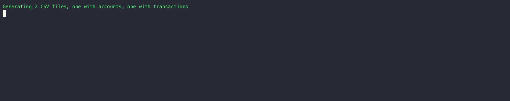
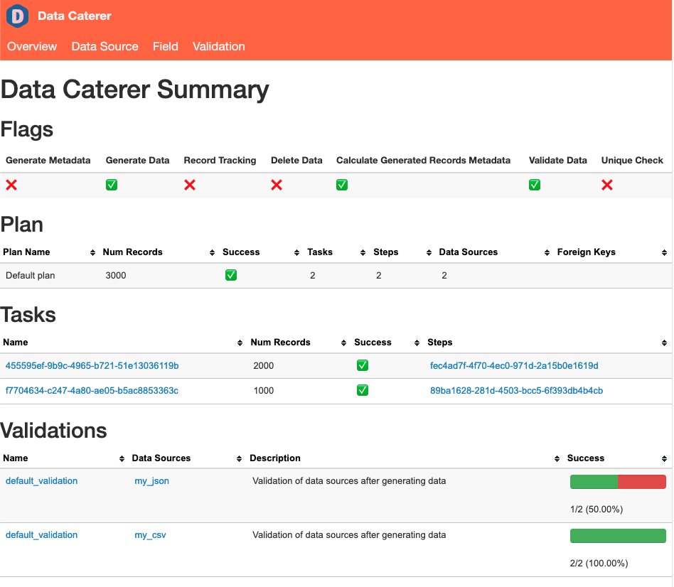

First Data Generation
Creating a data generator for a CSV file.

Requirements
- 20 minutes
- Git
- Gradle
- Docker
Get Started
First, we will clone the data-caterer-example repo which will already have the base project setup required.
Plan Setup
Create a new Java or Scala class.
- Java:
src/main/java/io/github/datacatering/plan/MyCsvPlan.java - Scala:
src/main/scala/io/github/datacatering/plan/MyCsvPlan.scala
Make sure your class extends PlanRun.
This class defines where we need to define all of our configurations for generating data. There are helper variables and methods defined to make it simple and easy to use.
Connection Configuration
When dealing with CSV files, we need to define a path for our generated CSV files to be saved at, along with any other high level configurations.
Schema
Our CSV file that we generate should adhere to a defined schema where we can also define data types.
Let's define each field along with their corresponding data type. You will notice that the string fields do not have a
data type defined. This is because the default data type is StringType.
var accountTask = csv("customer_accounts", "/opt/app/data/customer/account", Map.of("header", "true"))
.fields(
field().name("account_id"),
field().name("balance").type(DoubleType.instance()),
field().name("created_by"),
field().name("name"),
field().name("open_time").type(TimestampType.instance()),
field().name("status")
);
Field Metadata
We could stop here and generate random data for the accounts table. But wouldn't it be more useful if we produced data that is closer to the structure of the data that would come in production? We can do this by defining various metadata attributes that add guidelines that the data generator will understand when generating data.
account_id
account_idfollows a particular pattern that where it starts withACCand has 8 digits after it. This can be defined via a regex like below. Alongside, we also mention that values are unique ensure that unique values are generated.
balance
balancelet's make the numbers not too large, so we can define a min and max for the generated numbers to be between1and1000.
name
nameis a string that also follows a certain pattern, so we could also define a regex but here we will choose to leverage the DataFaker library and create anexpressionto generate real looking name. All possible faker expressions can be found here
open_time
open_timeis a timestamp that we want to have a value greater than a specific date. We can define a min date by usingjava.sql.Datelike below.
status
statusis a field that can only obtain one of four values,open, closed, suspended or pending.
created_by
created_byis a field that is based on thestatusfield where it follows the logic:if status is open or closed, then it is created_by eod else created_by event. This can be achieved by defining a SQL expression like below.
Putting it all the fields together, our class should now look like this.
var accountTask = csv("customer_accounts", "/opt/app/data/customer/account", Map.of("header", "true"))
.fields(
field().name("account_id").regex("ACC[0-9]{8}").unique(true),
field().name("balance").type(DoubleType.instance()).min(1).max(1000),
field().name("created_by").sql("CASE WHEN status IN ('open', 'closed') THEN 'eod' ELSE 'event' END"),
field().name("name").expression("#{Name.name}"),
field().name("open_time").type(TimestampType.instance()).min(java.sql.Date.valueOf("2022-01-01")),
field().name("status").oneOf("open", "closed", "suspended", "pending")
);
val accountTask = csv("customer_accounts", "/opt/app/data/customer/account", Map("header" -> "true"))
.fields(
field.name("account_id").regex("ACC[0-9]{8}").unique(true),
field.name("balance").`type`(DoubleType).min(1).max(1000),
field.name("created_by").sql("CASE WHEN status IN ('open', 'closed') THEN 'eod' ELSE 'event' END"),
field.name("name").expression("#{Name.name}"),
field.name("open_time").`type`(TimestampType).min(java.sql.Date.valueOf("2022-01-01")),
field.name("status").oneOf("open", "closed", "suspended", "pending")
)
Record Count
We only want to generate 100 records, so that we can see what the output looks like. This is controlled at the
accountTask level like below. If you want to generate more records, set it to the value you want.
Additional Configurations
At the end of data generation, a report gets generated that summarises the actions it performed. We can control the output folder of that report via configurations. We will also enable the unique check to ensure any unique fields will have unique values generated.
Execute
To tell Data Caterer that we want to run with the configurations along with the accountTask, we have to call execute
. So our full plan run will look like this.
public class MyCsvJavaPlan extends PlanRun {
{
var accountTask = csv("customer_accounts", "/opt/app/data/customer/account", Map.of("header", "true"))
.fields(
field().name("account_id").regex("ACC[0-9]{8}").unique(true),
field().name("balance").type(DoubleType.instance()).min(1).max(1000),
field().name("created_by").sql("CASE WHEN status IN ('open', 'closed') THEN 'eod' ELSE 'event' END"),
field().name("name").expression("#{Name.name}"),
field().name("open_time").type(TimestampType.instance()).min(java.sql.Date.valueOf("2022-01-01")),
field().name("status").oneOf("open", "closed", "suspended", "pending")
);
var config = configuration()
.generatedReportsFolderPath("/opt/app/data/report")
.enableUniqueCheck(true);
execute(config, accountTask);
}
}
class MyCsvPlan extends PlanRun {
val accountTask = csv("customer_accounts", "/opt/app/data/customer/account", Map("header" -> "true"))
.fields(
field.name("account_id").regex("ACC[0-9]{8}").unique(true),
field.name("balance").`type`(DoubleType).min(1).max(1000),
field.name("created_by").sql("CASE WHEN status IN ('open', 'closed') THEN 'eod' ELSE 'event' END"),
field.name("name").expression("#{Name.name}"),
field.name("open_time").`type`(TimestampType).min(java.sql.Date.valueOf("2022-01-01")),
field.name("status").oneOf("open", "closed", "suspended", "pending")
)
val config = configuration
.generatedReportsFolderPath("/opt/app/data/report")
.enableUniqueCheck(true)
execute(config, accountTask)
}
Run
Now we can run via the script ./run.sh that is in the top level directory of the data-caterer-example to run the
class we just
created.
./run.sh
#input class MyCsvJavaPlan or MyCsvPlan
#after completing
head docker/sample/customer/account/part-00000*
Your output should look like this.
account_id,balance,created_by,name,open_time,status
ACC06192462,853.9843359645766,eod,Hoyt Kertzmann MD,2023-07-22T11:17:01.713Z,closed
ACC15350419,632.5969895326234,eod,Dr. Claude White,2022-12-13T21:57:56.840Z,open
ACC25134369,592.0958847218986,eod,Fabian Rolfson,2023-04-26T04:54:41.068Z,open
ACC48021786,656.6413439322964,eod,Dewayne Stroman,2023-05-17T06:31:27.603Z,open
ACC26705211,447.2850352884595,event,Garrett Funk,2023-07-14T03:50:22.746Z,pending
ACC03150585,750.4568929015996,event,Natisha Reichel,2023-04-11T11:13:10.080Z,suspended
ACC29834210,686.4257811608622,event,Gisele Ondricka,2022-11-15T22:09:41.172Z,suspended
ACC39373863,583.5110618128994,event,Thaddeus Ortiz,2022-09-30T06:33:57.193Z,suspended
ACC39405798,989.2623959059525,eod,Shelby Reinger,2022-10-23T17:29:17.564Z,open
Also check the HTML report, found at docker/sample/report/index.html, that gets generated to get an overview of what
was executed.

Join With Another CSV
Now that we have generated some accounts, let's also try to generate a set of transactions for those accounts in CSV format as well. The transactions could be in any other format, but to keep this simple, we will continue using CSV.
We can define our schema the same way along with any additional metadata.
var transactionTask = csv("customer_transactions", "/opt/app/data/customer/transaction", Map.of("header", "true"))
.fields(
field().name("account_id"),
field().name("name"),
field().name("amount").type(DoubleType.instance()).min(1).max(100),
field().name("time").type(TimestampType.instance()).min(java.sql.Date.valueOf("2022-01-01")),
field().name("date").type(DateType.instance()).sql("DATE(time)")
);
val transactionTask = csv("customer_transactions", "/opt/app/data/customer/transaction", Map("header" -> "true"))
.fields(
field.name("account_id"),
field.name("full_name"),
field.name("amount").`type`(DoubleType).min(1).max(100),
field.name("time").`type`(TimestampType).min(java.sql.Date.valueOf("2022-01-01")),
field.name("date").`type`(DateType).sql("DATE(time)")
)
Records Per Field
Usually, for a given account_id, full_name, there should be multiple records for it as we want to simulate a customer
having multiple transactions. We can achieve this through defining the number of records to generate in the count
function.
Random Records Per Field
Above, you will notice that we are generating 5 records per account_id, full_name. This is okay but still not quite
reflective of the real world. Sometimes, people have accounts with no transactions in them, or they could have many. We
can accommodate for this via defining a random number of records per field.
Here we set the minimum number of records per field to be 0 and the maximum to 5.
Foreign Key
In this scenario, we want to match the account_id in account to match the same field values in transaction. We
also want to match name in account to full_name in transaction. This can be done via plan configuration like
below.
Now, stitching it all together for the execute function, our final plan should look like this.
public class MyCsvJavaPlan extends PlanRun {
{
var accountTask = csv("customer_accounts", "/opt/app/data/customer/account", Map.of("header", "true"))
.fields(
field().name("account_id").regex("ACC[0-9]{8}").unique(true),
field().name("balance").type(DoubleType.instance()).min(1).max(1000),
field().name("created_by").sql("CASE WHEN status IN ('open', 'closed') THEN 'eod' ELSE 'event' END"),
field().name("name").expression("#{Name.name}"),
field().name("open_time").type(TimestampType.instance()).min(java.sql.Date.valueOf("2022-01-01")),
field().name("status").oneOf("open", "closed", "suspended", "pending")
)
.count(count().records(100));
var transactionTask = csv("customer_transactions", "/opt/app/data/customer/transaction", Map.of("header", "true"))
.fields(
field().name("account_id"),
field().name("name"),
field().name("amount").type(DoubleType.instance()).min(1).max(100),
field().name("time").type(TimestampType.instance()).min(java.sql.Date.valueOf("2022-01-01")),
field().name("date").type(DateType.instance()).sql("DATE(time)")
)
.count(count().recordsPerFieldGenerator(generator().min(0).max(5), "account_id", "full_name"));
var config = configuration()
.generatedReportsFolderPath("/opt/app/data/report")
.enableUniqueCheck(true);
var myPlan = plan().addForeignKeyRelationship(
accountTask, List.of("account_id", "name"),
List.of(Map.entry(transactionTask, List.of("account_id", "full_name")))
);
execute(myPlan, config, accountTask, transactionTask);
}
}
class MyCsvPlan extends PlanRun {
val accountTask = csv("customer_accounts", "/opt/app/data/customer/account", Map("header" -> "true"))
.fields(
field.name("account_id").regex("ACC[0-9]{8}").unique(true),
field.name("balance").`type`(DoubleType).min(1).max(1000),
field.name("created_by").sql("CASE WHEN status IN ('open', 'closed') THEN 'eod' ELSE 'event' END"),
field.name("name").expression("#{Name.name}"),
field.name("open_time").`type`(TimestampType).min(java.sql.Date.valueOf("2022-01-01")),
field.name("status").oneOf("open", "closed", "suspended", "pending")
)
.count(count.records(100))
val transactionTask = csv("customer_transactions", "/opt/app/data/customer/transaction", Map("header" -> "true"))
.fields(
field.name("account_id"),
field.name("name"),
field.name("amount").`type`(DoubleType).min(1).max(100),
field.name("time").`type`(TimestampType).min(java.sql.Date.valueOf("2022-01-01")),
field.name("date").`type`(DateType).sql("DATE(time)")
)
.count(count.recordsPerFieldGenerator(generator.min(0).max(5), "account_id", "full_name"))
val config = configuration
.generatedReportsFolderPath("/opt/app/data/report")
.enableUniqueCheck(true)
val myPlan = plan.addForeignKeyRelationship(
accountTask, List("account_id", "name"),
List(transactionTask -> List("account_id", "full_name"))
)
execute(myPlan, config, accountTask, transactionTask)
}
Let's try run again.
#clean up old data
rm -rf docker/sample/customer/account
./run.sh
#input class MyCsvJavaPlan or MyCsvPlan
#after completing, let's pick an account and check the transactions for that account
account=$(tail -1 docker/sample/customer/account/part-00000* | awk -F "," '{print $1 "," $4}')
echo $account
cat docker/sample/customer/transaction/part-00000* | grep $account
It should look something like this.
ACC29117767,Willodean Sauer
ACC29117767,Willodean Sauer,84.99145871948083,2023-05-14T09:55:51.439Z,2023-05-14
ACC29117767,Willodean Sauer,58.89345733567232,2022-11-22T07:38:20.143Z,2022-11-22
Congratulations! You have now made a data generator that has simulated a real world data scenario. You can check the
DocumentationJavaPlanRun.java or DocumentationPlanRun.scala files as well to check that your plan is the same.
We can now look to consume this CSV data from a job or service. Usually, once we have consumed the data, we would also want to check and validate that our consumer has correctly ingested the data.
Validate
In this scenario, our consumer will read in the CSV file, do some transformations, and then save the data to Postgres. Let's try to configure data validations for the data that gets pushed into Postgres.
Postgres setup
First, we define our connection properties for Postgres. You can check out the full options available here.
We can connect and access the data inside the table account.transactions. Now to define our data validations.
Validations
For full information about validation options and configurations, check here. Below, we have an example that should give you a good understanding of what validations are possible.
var postgresValidateTask = postgres(...)
.table("account", "transactions")
.validations(
validation().field("account_id").isNull(true),
validation().field("name").matches("[A-Z][a-z]+ [A-Z][a-z]+").errorThreshold(0.2).description("Some names have different formats"),
validation().field("balance").greaterThanOrEqual(0).errorThreshold(10).description("Account can have negative balance if overdraft"),
validation().expr("CASE WHEN status == 'closed' THEN isNotNull(close_date) ELSE isNull(close_date) END"),
validation().unique("account_id", "name"),
validation().groupBy("account_id", "name").max("login_retry").lessThan(10)
);
val postgresValidateTask = postgres(...)
.table("account", "transactions")
.validations(
validation.field("account_id").isNull(true),
validation.field("name").matches("[A-Z][a-z]+ [A-Z][a-z]+").errorThreshold(0.2).description("Some names have different formats"),
validation.field("balance").greaterThanOrEqual(0).errorThreshold(10).description("Account can have negative balance if overdraft"),
validation.expr("CASE WHEN status == 'closed' THEN isNotNull(close_date) ELSE isNull(close_date) END"),
validation.unique("account_id", "name"),
validation.groupBy("account_id", "name").max("login_retry").lessThan(10)
)
name
For all values in the name field, we check if they match the regex [A-Z][a-z]+ [A-Z][a-z]+. As we know in the real
world, names do not always follow the same pattern, so we allow for an errorThreshold before marking the validation
as failed. Here, we define the errorThreshold to be 0.2, which means, if the error percentage is greater than 20%,
then fail the validation. We also append on a helpful description so other developers/users can understand the context
of the validation.
balance
We check that all balance values are greater than or equal to 0. This time, we have a slightly different
errorThreshold as it is set to 10, which means, if the number of errors is greater than 10, then fail the
validation.
expr
Sometimes, we may need to include the values of multiple fields to validate a certain condition. This is where we can
use expr to define a SQL expression that returns a boolean. In this scenario, we are checking if the status field
has value closed, then the close_date should be not null, otherwise, close_date is null.
unique
We check whether the combination of account_id and name are unique within the dataset. You can define one or more
fields for unique validations.
groupBy
There may be some business rule that states the number of login_retry should be less than 10 for each account. We can
check this via a group by validation where we group by the account_id, name, take the maximum value
for login_retry per account_id,name combination, then check if it is less than 10.
You can now look to play around with other configurations or data sources to meet your needs. Also, make sure to explore the docs further as it can guide you on what can be configured.